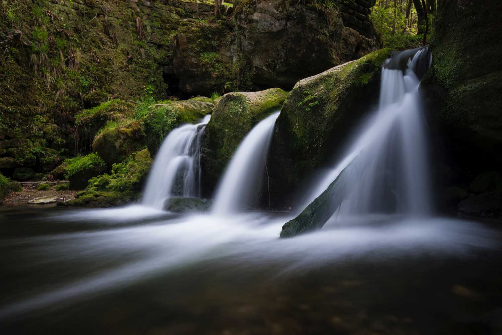
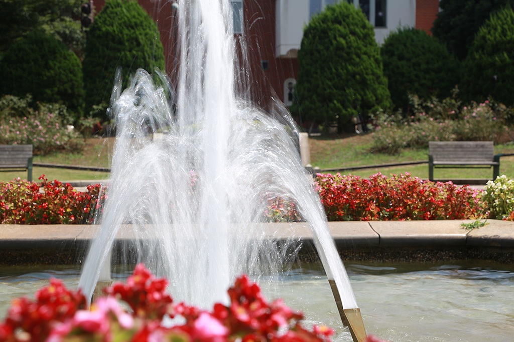
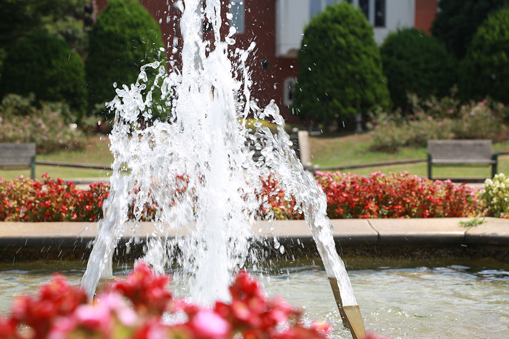
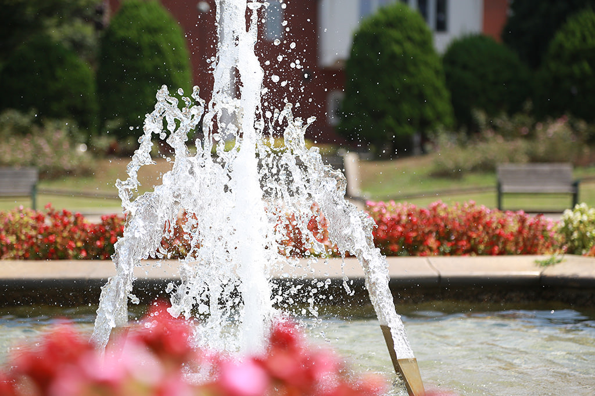
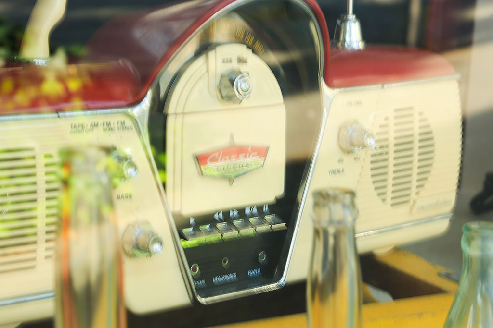
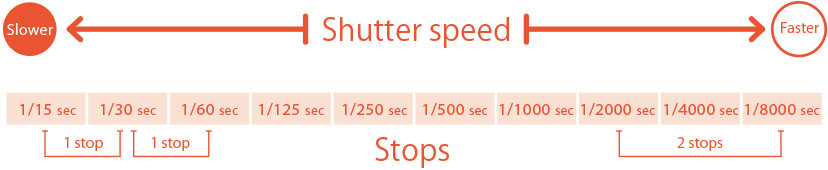

Photography Basic | Part 2
Shutter Speed
When taking photographs, you want to have a good grasp of shutter speed and its effects on your photographs. What kind of effects can you create with a faster or slower shutter speed? Let us examine the effects of different shutter speeds with the help of the following examples.

Shutter speed helps you “control” the movement of the subject in your photos
Points-to-note
- A faster shutter speed freezes the subject in motion.
- A slower shutter speed creates a motion blur effect from the movement of the subject.
- You can adjust the amount of light by opening/closing the shutter.
TThe shutter speed (also: exposure time) is the length of time when the shutter is open and light can enter the image sensor inside the camera. The shutter speed is indicated as 1 sec, 1/2 sec, 1/4 sec... 1/125 sec to 1/250 sec, etc.
A faster shutter speed reduces the length of time where light can enter, whereas a slower shutter speed increases this length of time. Therefore, the slower the shutter speed, the greater the amount of light that can enter the camera.
Shutter speed not only allows you to modify the amount of light, it can also change the way the movement of a subject is captured. At a faster shutter speed, you can completely freeze the action of a moving subject. Conversely, when you use a slower shutter speed, you can blur the subject in the direction of motion, and therefore capture the motion of subjects such as flowing water. In other words, the shutter speed allows you to control how the movement of a photographic subject is depicted.
Use shutter speed settings to change how the movement of photographic subjects is captured
EOS 5D Mark III/ EF24-105mm f/4L IS USM/ FL: 105mm/ Shutter-priority AE (f/14, 1/10 sec., EV+1.3)/ ISO 100
1/10 sec
EOS 5D Mark III/ EF24-105mm f/4L IS USM/ FL: 105mm/ Shutter-priority AE (f/8, 1/160 sec., EV+1.3)/ ISO 100
1/160 sec
EOS 5D Mark III/ EF24-105mm f/4L IS USM/ FL: 105mm/ Shutter-priority AE (f/4, 1/2500 sec., EV+1.3)/ ISO 400
1/2500 sec
Depending on the movement of the subject, adjusting the shutter speed allows you to control how the movement of a subject is captured – whether you use a faster shutter speed to freeze the action of a subject, or choose to capture its movement by using a slower shutter speed.
Concept 1: Motion blur and camera shake
There are two types of blur, ‘motion blur’ and ‘camera shake’, which originate from different sources. Motion blur occurs when the movement of the subject is faster than the shutter speed. The background is not moving, and so only the subject is blurred. Camera shake occurs when the hand that is holding the camera shakes as the shutter is released, causing the entire image to be blurred. In both cases, blur can be prevented by increasing the shutter speed.
EOS 5D Mark III/ EF24-105mm f/4L IS USM/ FL: 105mm/ Aperture-priority AE (f/22, 1/2 sec., EV+0.7)/ ISO 100
Motion blur: Only the subject in the centre is blurred.
EOS 5D Mark III/ EF24-105mm f/4L IS USM/ FL: 105mm/ Aperture AE (f/11, 1/6 sec., EV+1.0)/ ISO 100
Camera shake: The entire photograph is blurred.
Concept 2: The relationship between shutter speed and number of stops
When we increase the shutter speed from 1/30 sec to 1/60 sec, for example, this halves the length of time when the shutter is open and we refer to it as “making the shutter speed 1 stop faster”. On the other hand, when we decrease the shutter speed from 1/60 sec to 1/30 sec, we double the length of time when the shutter is open and therefore “slow the shutter speed by 1 stop”.
Generally, the shutter speed of a DSLR camera can be adjusted in intervals of 1/2 and 1/3 stops in addition to 1 stop. For example, using 1/2 stops, 1 stop can be divided into two intervals for shutter speeds of 1/30 sec, 1/45 sec and 1/60 sec, with an additional speed in between. The amount of light entering the camera can be more finely adjusted by using smaller intervals like these half-stops (1/2 stops).